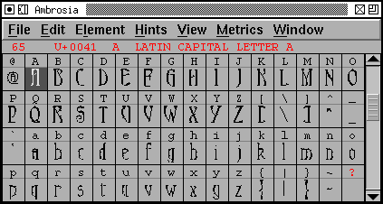

 フォントビューのビットマップ表示
アンチエイリアス処理された (グレイマップ) フォントビューの表示
画面のピクセルサイズでは、細部の微妙な形の一部はうまく表示できませんが、アンチエイリアスを使用して調整すると、結果はずっと良くなります。 下の“H”では、左側 (ビットマップ) は 2 個の水平バーをうまく表示できていませんが、右側では美しくレンダリングされています。 上の例では、結果はより極端です。
— 目次 — 戻る —